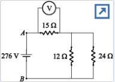

1-2. Consider the circuit diagram given below
where R1 = Ω, R2 = Ω, and R3 = Ω.
1.Find the unknown emf ε1 in the circuit.
2.Find the unknown emf ε2 in the circuit.
3-4. Consider the circuit diagram given below.
where V1 = V and R1 = Ω.
3.Find the unknown emf ε in the circuit.
4.Find the unknown resistor R in the circuit.
5-6. Consider the circuit diagram given below.
5.
6.
7-9.where X = V.
Which of the following circuits shows how a voltmeter would be connected to measure the voltage across the 83.0-kΩ resistor?
7.
8. If a voltmeter that is ideal is connected to measure the voltage across the 83.0-kΩ resistor, what is its reading? Enter the absolute value of the reading.
9. If a voltmeter of resistance 1.00 MΩ is connected to measure the voltage across the 83.0-kΩ resistor, what is its reading? Enter the absolute value of the reading.
10. In the circuit shown, assume the battery emf is V, R = 1.00 MΩ, and C = μF. The switch is closed at t = 0. If the capacitor is initially discharged, then at what time t will the voltage across the capacitor be 15.0 V?
11. In the circuit, R = 30.0 kΩ and C = 0.100 μF. The capacitor is allowed to charge fully, and then the switch is changed from position a to position b. What will the voltage across the resistor be 8.40 ms later?
where X = V.
12.In the circuit, at t = 0 the switch is closed.
In the circuit, the initial energy stored in the capacitor is J. At what time is the energy stored in the capacitor 1.25 J?
13-14. Consider the circuit in the diagram. Let V = V.
13.After the switch S has been closed for a long time, what is the current through the 12.0-Ω resistor?
14.After the switch S has been closed for a long time, what is the voltage across the capacitor?